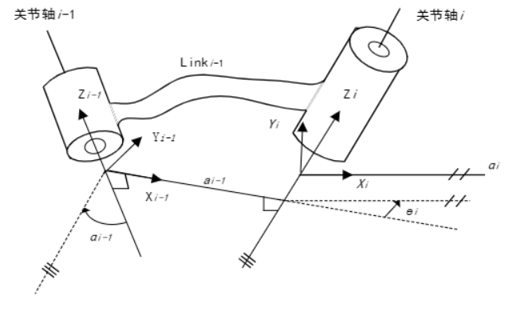
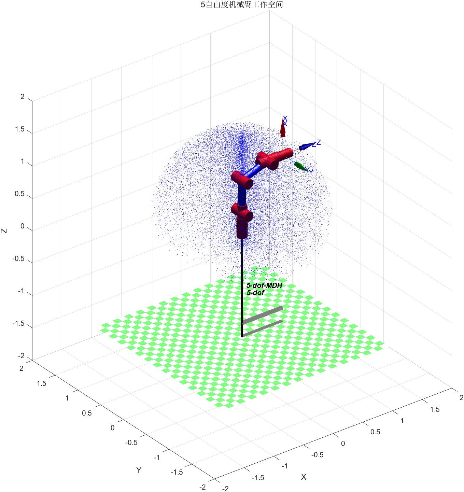
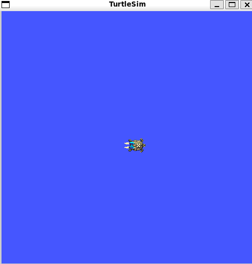
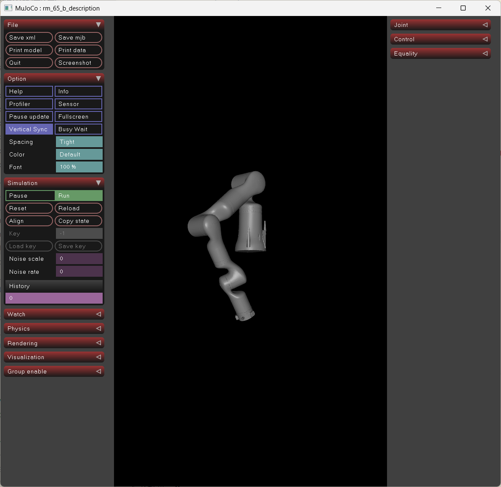
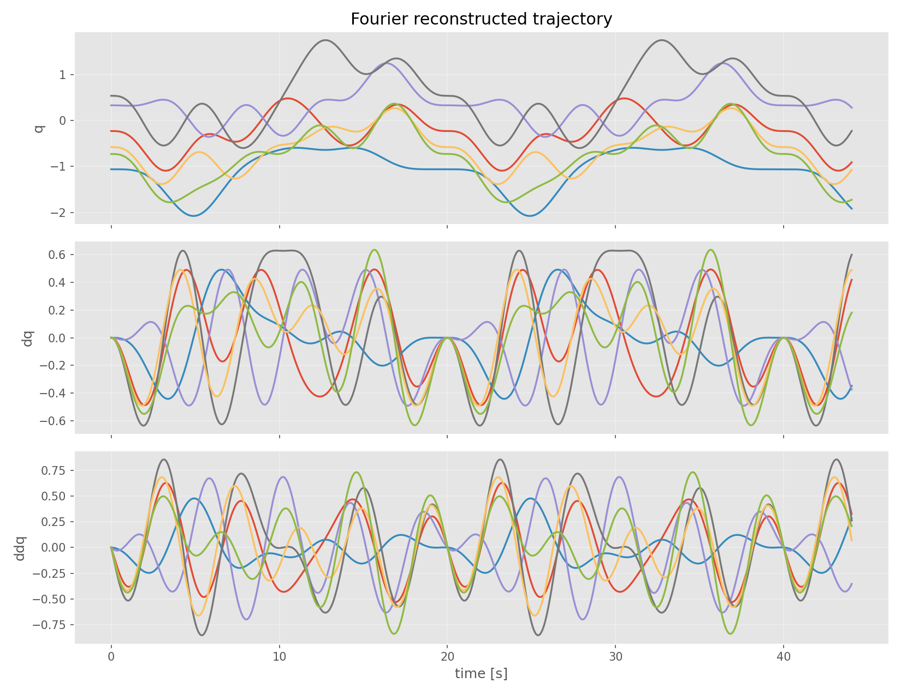
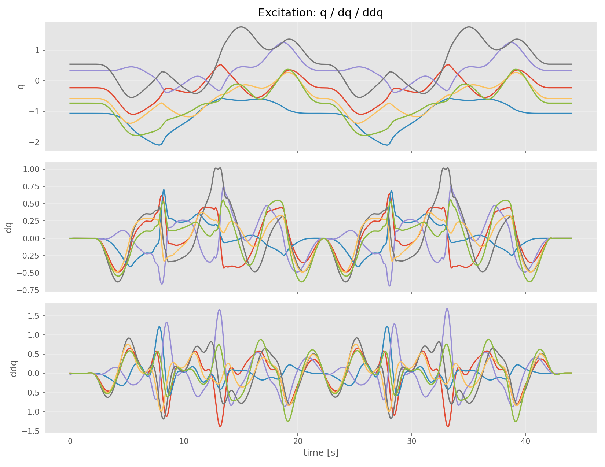
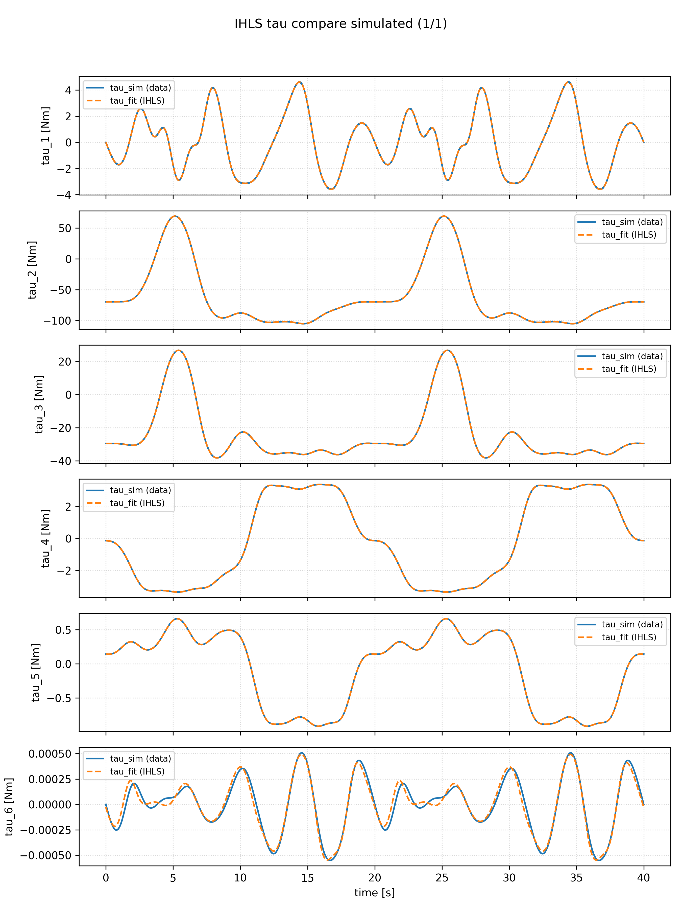
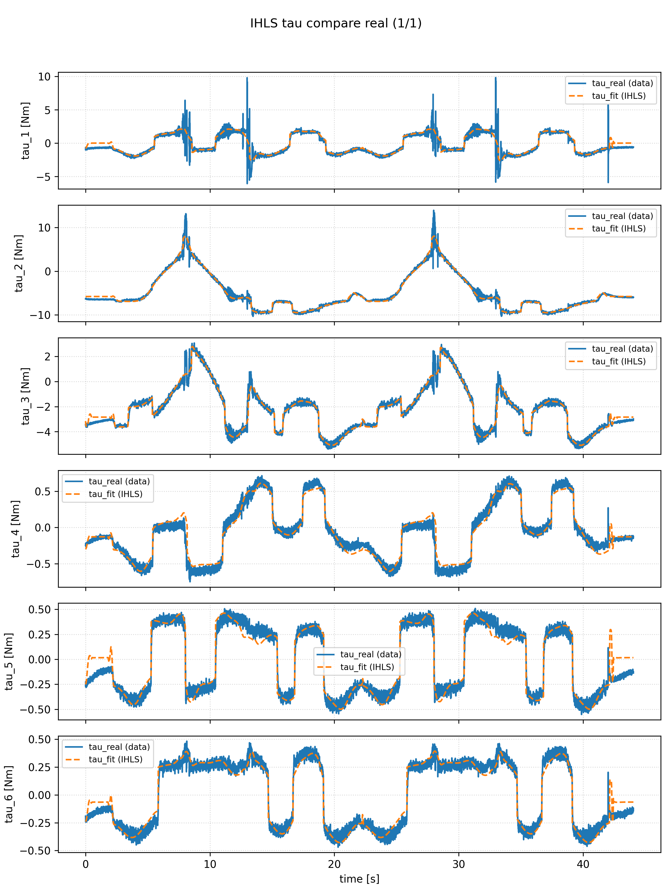

数字孪生驱动的工业机器人关键动力学参数辨识
[toc]
1. 绪论
1.1 研究背景与意义
在全球制造业向智能化、柔性化加速演进的浪潮中，工业机器人已超越传统简单重复的劳动替代，成为实现精密装配、高端加工、协同作业等复杂任务的核心装备。随着任务精度与动态性能要求的跃升，其控制系统的“模型依赖性”日益凸显。一个精确的机器人动力学模型，如同其数字世界的“灵魂”，是实现高精度轨迹跟踪、振动主动抑制与外力动态补偿的基石。然而，构成这一模型的关键动力学参数——包括连杆的质心、惯性张量、关节的摩擦系数等——在机器人的全生命周期中并非恒定不变。它们受到装配误差、长期磨损、负载变化及温度波动等因素的深刻影响，导致基于理想图纸和出厂设计的静态模型难以匹配物理实体的真实状态，从而形成制约机器人性能突破的“模型失配”瓶颈。
传统的动力学参数辨识方法主要依赖于精心设计的离线实验。通过激励轨迹规划采集数据，再运用最小二乘等算法进行批量估计。这类方法虽成熟，但存在显著局限：其一，实验过程需机器人专用空载运行，可能中断生产；其二，辨识结果仅为某一特定时刻与状态下的“静态快照”，难以直接用于后续的模型更新；其三，对测量噪声和模型结构误差较为敏感。当前，虽有研究引入神经网络、深度学习等数据驱动方法以期提升精度，但其“黑箱”特性带来的可解释性差、泛化能力弱及海量数据依赖问题，在强调可靠性的工业场景中应用受阻。因此，如何利用有限的实测数据，实现动力学模型的高精度离线校准，并使其能够作为数字孪生模型的可靠初始状态，成为学术界与工业界共同关注的基础性问题。
数字孪生技术的兴起与成熟，为解决上述问题提供了新的思路与工具。数字孪生通过构建与物理实体几何、运动学、动力学特性相映射的高保真虚拟模型，在信息空间开辟了一个可重复、可验证的“试验场”。在本研究中，数字孪生主要扮演以下角色：其一，提供高保真仿真环境，用于生成理想训练数据并验证辨识算法；其二，作为数据融合载体，支持仿真数据与实测数据联合分析；其三，作为参数校准目标模型，支撑虚实一致性持续提升。
需要说明的是，本文题目中的“数字孪生驱动”并非单向作用，而是“真机数据输入—参数辨识更新—孪生体参数回注”的双向反馈闭环驱动过程。真实机械臂运行数据经数字孪生联动平台进入辨识算法，辨识得到的动力学参数再经平台回注至 Isaac Sim 层面的仿真机械臂，从而持续修正孪生体动力学特性并推动其向真机高保真演进。基于此，本文采用“离线初始化 + 在线更新”的技术路线：先利用批量采集数据完成基础参数标定，再通过在线递推辨识实现参数动态更新，使虚拟模型在运行过程中持续贴合物理实体状态。
本研究旨在探索数字孪生框架下工业机器人关键动力学参数“离线建模-在线辨识”一体化方法，其意义体现在理论与实践两个层面：
在理论层面，本研究有望：（1）构建一个融合仿真数据与实测数据的离线-在线统一参数辨识框架，阐明虚拟模型、实测数据与优化算法之间的相互作用机制；（2）提出针对实际工业机器人数据特性的改进最小二乘与在线递推辨识方法，提高参数估计的鲁棒性与精度；（3）利用数字孪生仿真平台生成理想数据集，为离线与在线算法的性能评估提供基准。
在实践层面，本研究的成果可直接服务于智能制造中的机器人校准与维护。精确的动力学参数能够提升机器人的绝对定位精度与轨迹跟踪性能，满足精密加工等高端应用需求；基于辨识参数的健康状态评估可为预测性维护提供依据；同时，经过校准的高保真动力学孪生模型可作为虚拟调试、工艺优化的可靠平台。
综上，开展数字孪生框架下工业机器人关键动力学参数“离线建模 + 在线辨识”研究，既是对传统离线辨识方法的深化，也是推动高可信度数字孪生模型在线运行的关键工作，具有明确的科学价值与工程应用前景。
1.2 国内外研究现状
工业机器人动力学参数辨识是实现高精度控制的基础，而数字孪生则为该领域注入了新的研究范式。本节将从传统动力学参数辨识方法和数字孪生闭环驱动的建模与优化方法两方面，对国内外研究现状进行梳理与评述。
1.2.1 工业机器人动力学参数辨识的传统方法研究
动力学参数辨识的核心目标是获取机器人连杆的惯性参数（如质量、质心、惯性张量）以及关节的摩擦参数。传统方法已形成一套较为成熟的技术体系，其基本流程通常包括基于牛顿-欧拉法或拉格朗日法建立线性化动力学模型、设计激励轨迹激发动力学特性、采集数据，并最终利用最小二乘法等进行参数估计。该领域的研究焦点主要集中在提升辨识的精度、效率与工程实用性上。
在提升精度与效率方面，研究者们致力于优化模型与算法。例如，通过QR分解等方法提取最小惯性参数集，以消除模型中的冗余参数，提高数值稳定性。同时，针对机器人动力学中的强非线性摩擦环节，发展了多种摩擦模型（如Stribeck、LuGre模型）及其辨识方法，以更精确地描述低速爬行等现象。在工程化方面，研究趋向于开发模块化、可编程的辨识流程，甚至有研究基于机器人操作系统开发了参数辨识工具箱，旨在简化工程实施步骤。
然而，传统离线辨识方法仍存在一些固有局限：其一，辨识结果依赖于特定的激励轨迹和数据质量，对噪声较为敏感；其二，模型参数通常只辨识一次，缺乏后续的校准与更新机制；其三，高精度辨识往往依赖额外的关节扭矩传感器，增加了成本与复杂性。这些局限促使学者们探索能够融合仿真与实测数据、支持模型校准的新方法。
1.2.2 数字孪生闭环驱动的机器人建模与参数优化研究
数字孪生通过构建与物理实体实时映射、交互与共生的高保真虚拟模型，为机器人建模与参数优化提供了新路径。在机器人领域，数字孪生的应用正从运动学仿真向高保真动力学建模、参数辨识与闭环更新深化。
- 数字孪生的建模范式与动力学融合
当前，构建机器人数字孪生体主要有两种技术路径：纯数据驱动模型和数据与机理融合模型。前者依赖人工智能算法与大数据，建模效率高但可解释性差、数据需求量大；后者则结合物理定律与实测数据，在模型可解释性、精度与数据需求间取得平衡，被认为是构建高可信度动力学孪生体的主流方向。例如，有研究明确指出，为数字孪生建立精确的机理动力学模型是集成状态监测、误差补偿等多种应用的基础。 - 动力学参数在线补偿与优化
数字孪生的核心优势在于其虚实映射能力，这使得利用实测数据对虚拟模型进行参数校准成为可能。国内外学者已在此方向展开积极探索：
- 在移动机器人领域，研究者提出了基于数字孪生的可视化监控框架，并利用神经网络对非线性动力学模型参数进行校准，实验表明该方法可提升机器人的定位精度。
- 在并联机器人领域，研究构建了集成运动学模型与改进智能算法的数字孪生系统，实现了离线参数校准与位置误差预测补偿。另有研究建立了刚柔耦合动力学模型作为孪生体核心，并提出了基于卡尔曼滤波数据融合的分布式力/位交互方法，实现了动态误差校正。
- 前沿探索方面，大语言模型等AI技术与仿真平台的结合为未来动力学模型的自动优化提供了新工具。同时，在软机器人等复杂系统建模中，有限元分析与机器学习的结合也为数字孪生提供了精细化建模思路。
上述研究多聚焦于利用数字孪生实现参数校准与误差补偿，且大量工作采用离线批量辨识作为模型初始化的手段，这与本文的研究定位一致。
1.2.3 综合评述与研究空白
综上所述，当前研究呈现出从单一离线辨识向数据与机理融合、从独立算法向系统框架集成发展的明显趋势。然而，通过深入分析，仍可发现以下研究空白：在模型校准的精度与鲁棒性方面，面向实际工业机器人，如何利用有限、含噪的实测数据，结合仿真生成的理想数据，提高动力学参数辨识的精度与鲁棒性，仍是一个需要深入研究的问题；在数字孪生框架下的离线-在线闭环流程方面，现有研究虽然提及数字孪生，但缺乏一个完整的、从虚拟建模、激励设计、数据采集到在线参数更新与模型持续校准的系统性闭环框架；在工程实用性与可复现性方面，大多数研究仍处于实验室原型阶段，面向工业现场、易于部署的标准化参数辨识流程与工具较为缺乏。鉴于此，本研究旨在构建一个数字孪生闭环驱动框架下的工业机器人动力学参数离线建模与在线辨识方法，重点解决高保真动力学建模、基于仿真与实测数据融合的离线/在线辨识算法，以及参数回注驱动下的虚实一致性持续优化流程，以期为提升数字孪生模型与真机的一致性提供可行方案。
1.3 本文研究内容与结构安排
本研究采用“离线辨识奠基、在线辨识增强”的技术范式：基于牛顿-欧拉线性化动力学模型，设计激励轨迹并采集 UR12e 关节运动与力矩数据，先通过离线最小二乘建立参数基线，再通过在线递推与机理-数据融合方法实现参数动态更新。同时，利用数字孪生联动平台形成“真机数据驱动辨识—辨识参数回注孪生体”的双向闭环链路，以 MuJoCo/Isaac Sim 侧仿真数据与真实机器人采集数据开展分层验证。本文的研究内容与章节安排如下：
第1章 绪论：阐述研究背景与意义，综述国内外研究现状，明确研究定位与内容。
第2章 动力学参数辨识问题建模：严格定义辨识问题，给出待辨识参数的物理意义与数学表述，建立线性回归模型框架。
第3章 工业机器人运动学与动力学建模：整合位姿描述、D-H 建模、雅可比矩阵、牛顿-欧拉推导、线性回归矩阵与最小参数集，为参数辨识提供统一建模基础。
第4章 基于数字孪生闭环驱动的参数辨识方法：阐述“数据输入—辨识更新—参数回注”总体框架与离线-在线辨识流程，给出离线最小二乘、在线递推 IHLS 及 IHLS-BPNN 融合辨识算法。
第5章 实验结果分析：分别进行仿真环境下的算法验证与真实机器人数据下的参数辨识，对比分析辨识结果与误差。
第6章 工作总结：总结全文工作，归纳创新点，并对在线辨识能力的持续优化与工程扩展方向进行展望。
2 动力学参数辨识问题建模
为建立后续辨识方法与实验设计的理论前提，本章对工业机器人动力学参数问题进行严格的定义与数学表述。首先阐明辨识问题的基本内涵，继而系统给出待辨识参数的物理定义与量纲，最后建立辨识问题的数学描述形式，并指出其与数字孪生框架相结合时所面临的扩展挑战。
2.1 辨识问题的基本定义
工业机器人动力学参数辨识，是指在已知机器人结构几何与关节运动状态的前提下，利用关节驱动力矩的测量值或者估计值，反向确定动力学模型中的未知物理参数的过程。该问题属于非线性灰箱辨识问题的一类特例：其结构由牛顿-欧拉或者拉格朗日力学严格确定，但是模型中的惯性参数与摩擦参数未知。 设一台具有个转动关节的串联工业机器人，其动力学行为可由如下标准形式描述：
其中：
- 为关节驱动力矩向量；
- 分别为关节位置、速度与加速度；
- 为惯性矩阵；
- 为科里奥利力与离心力矩阵；
- 为重力项；
- 为摩擦力矩。
在式(2.1)中，、、 的具体形式取决于各连杆的惯性参数（质量、质心位置、惯性张量），而 则取决于关节摩擦系数。这些参数统称为动力学参数，记作向量 。辨识任务可形式化地表述为：给定一组测量数据 ，寻求参数估计 ，使得模型预测力矩与实际力矩之间的某种误差度量最小化。
2.2 待辨识参数的物理定义
2.2.1 连杆惯性参数
对于每个连杆 （），其刚体惯性特性由以下10个独立参数完整刻画。
-
质量 （单位：）。质量是决定连杆平动惯性的基本量，直接影响惯性力 以及重力项。
-
质心位置矢量 （单位：）
质心位置定义在连杆 的固连坐标系中。该参数决定了重力对关节轴产生的力矩，以及惯性力对关节轴的力矩臂。在动力学方程中，质量与质心通常以乘积 的形式出现。 -
惯性张量 （单位：）
惯性张量描述了连杆绕不同轴旋转时的质量分布，其矩阵表示为对称正定形式：
其中对角元 称为惯性矩，非对角元 称为惯性积。惯性张量决定了连杆在旋转运动中抵抗角加速度的能力，并引起不同旋转轴之间的动力学耦合。
综上，每个连杆的原始惯性参数向量为：
采用 而非 作为待估变量，是为了在后续线性回归中保持方程关于参数的线性性质。
2.2.2 关节摩擦参数
关节摩擦力矩是影响低速跟踪精度与稳态误差的关键因素。本文采用工程中广泛使用的库仑 + 黏性摩擦模型：
其中：
- （单位：）为库仑摩擦系数，表征与运动方向相反的恒定阻力矩，其符号函数 在零速度处需适当正则化；
- （单位：）为黏性摩擦系数，表征与速度成正比的阻尼力矩。
该模型以线性形式纳入待估参数，每个关节引入两个摩擦参数。对于需要更精确刻画低速Stribeck效应的场景，可在此基础上扩展，但本文后续研究以式(2-4)为基础。
2.2.3 完整参数向量
将全部 个连杆的惯性参数与 个关节的摩擦参数排列为一个列向量，得到全局参数向量：
对于六自由度串联工业机器人（），原始参数总数 。
2.3 辨识问题的数学表述
2.3.1 线性回归形式
根据动力学建模理论，机器人动力学方程均可整理为关于参数向量 的线性形式：
其中 称为回归矩阵regressor matrix。其每一行对应一个关节力矩，每一列对应一个待辨识参数，矩阵元素仅依赖于 ，而不依赖于 。这一线性化性质是参数辨识能够采用标准最小二乘类方法的理论基石。
2.3.2 批量数据下的超定系统
设通过激励轨迹实验采集 个采样点（ 远大于参数个数），每个采样点 的回归矩阵为 ，力矩向量为 。将所有样本纵向堆叠，定义总回归矩阵 与总力矩向量 ：
于是辨识问题化为求解超定线性方程组：
求解该方程以获得参数估计的方法将在第4章给出。
3. 工业机器人运动学与动力学建模
本章整合了运动学与动力学建模的核心内容，按位姿与坐标变换、D-H 建模 、 雅可比矩阵 、 动力学方法选择 、 牛顿-欧拉推导 、 线性化回归 、 最小参数集的顺序展开，为后续参数辨识提供统一的建模基础。各部分均直接针对辨识所需的关键公式与概念。
3.1 位姿描述与空间变换
为统一后续 D-H 建模与递推动力学的符号语言，本节先给出位姿与空间变换的基础数学表达。
空间中任意点的位置可用三维向量描述：
刚体的姿态采用旋转矩阵表示，例如坐标系B相对于坐标系A的姿态为：
将位置与姿态合并，即得到齐次变换矩阵，它完整描述了一个坐标系在另一个坐标系中的位姿：
若两个坐标系之间存在旋转和平移的复合变换，则有：
该关系可统一写为齐次矩阵形式：
平移变换矩阵为：
绕 、、 轴旋转的齐次矩阵分别为：
以上变换是机器人运动学建模的基础，也是 D-H 参数法的直接数学工具。
3.2 机器人 D-H 建模
D-H 参数法将相邻连杆之间的位姿关系标准化为四个参数：连杆长度 、连杆扭转角 、连杆偏距 和关节角 。这四个参数中，只有关节角随时间变化，其余由机械结构固定。图3-1给出了建系示意图，本文不再重复其详细几何解释，仅给出变换矩阵。

由坐标系 到坐标系 的齐次变换矩阵为：
本文以 UR12e 机器人为研究对象，其 D-H 参数如表3-1所示。
表3-1 UR12e机器人D-H参数表
| 连杆 | 扭转角 | 连杆长度/m | 连杆偏距/m | 关节角度 |
|---|---|---|---|---|
| 1 | 0 | 0.1807 | ||
| 2 | -0.6127 | 0 | ||
| 3 | -0.57155 | 0 | ||
| 4 | 0 | 0.17415 | ||
| 5 | 0 | 0.11985 | ||
| 6 | 0 | 0.11655 | ||
| 表中 出现负值是由坐标系方向定义不同导致的，不影响正运动学计算的正确性。 |
3.3 雅可比矩阵
雅可比矩阵描述了末端执行器速度与关节速度之间的线性映射关系，是连接运动学与动力学的桥梁：
基于 D-H 参数，可通过微分变换法直接对正运动学方程求导得到：
其中为末端执行器的位姿函数。
在动力学参数辨识中，雅可比矩阵有两方面作用：其一，它为操作空间动力学模型提供变换基础；其二，雅可比矩阵的行列式为零对应奇异位形，激励轨迹设计时应避开奇异区，以保证回归矩阵的条件数可控，从而确保参数辨识的数值稳定性。本研究基于表3-1的 D-H 参数，利用符号计算工具获得了雅可比矩阵的解析表达式，用于后续的动力学建模。
3.4 动力学建模方法对比与选择
常用的机器人动力学建模方法主要有拉格朗日法和牛顿-欧拉法。
拉格朗日法从系统的总动能和总势能出发，通过欧拉-拉格朗日方程导出动力学模型。该方法的物理意义清晰，自然给出线性化参数结构，适合离线符号推导。然而，对于六自由度机器人，符号计算量巨大，实时计算负担重，不利于在线辨识。
牛顿-欧拉法则基于牛顿第二定律和欧拉方程，采用“外推计算速度/加速度—内推计算力/力矩”的递推形式，计算效率极高，且程序实现简单。更重要的是，其递推过程能够直接提取各惯性参数前的系数，便利地构造线性回归矩阵。基于本文“离线标定奠基、在线更新增强”的技术路线，且需要同时支持批量处理和流式数据，因此选择牛顿-欧拉法作为动力学建模的基本方法。
3.5 牛顿-欧拉动力学方程推导
设机器人具有 个转动关节，基座编号为0，末端连杆编号为 。递推过程分为外推和内推两步。
- 外推递推
外推从基座开始，依次计算各个连杆的运动学量。基座初始条件为：
对于转动关节,其角速度、角加速度和线加速度递推公式为：
连杆质心的线加速度为：
- 内推递推
内推从末端开始，计算各个连杆之间的相互作用力和力矩，末端为：
作用在连杆质心上的惯性力和惯性力矩为：
连杆对连杆的作用力和力矩递推公式为：
最终关节的驱动力矩为在关节轴方向上的投影加上摩擦力矩：
将上述递推结果整理为标准矩阵形式：
为准确描述关节摩擦特性，摩擦力矩采用工程中常用的库仑+黏性模型：
其中 为库仑摩擦系数， 为黏性摩擦系数， 为符号函数。
3.6 动力学方程的线性化与回归矩阵
动力学方程（3-19）关于惯性参数和摩擦参数呈线性关系，这是参数辨识能够采用最小二乘类方法的理论基础。将每个连杆的惯性参数组合为标准形式：
其中 而非 作为待估变量，是为了在牛顿-欧拉递推过程中保持线性关系。 记全局参数向量 ，其含所有连杆的10个参数及每个关节的两个摩擦参数，对于六自由度机器人 。则动力学方程可写为回归形式：
其中 称为回归矩阵，其元素仅依赖于 ，而与 无关。本文借助开源动力学库 Pinocchio 高效计算回归矩阵：
Y = pinocchio.computeJointTorqueRegressor(model, data, q[i], dq[i], ddq[i])对于包含摩擦的模型，该函数返回的矩阵维度为 。设采集 个采样点，每个采样点的回归矩阵为 ，力矩向量为 ，则可堆叠为全局超定系统：
式(3-23)即后续辨识算法的输入形式。
3.7 最小参数集
由于机器人结构的几何约束和运动学耦合，回归矩阵 通常是列亏秩的，即 。若直接估计原始参数 ，会面临解不唯一和数值不稳定的问题。为此，需要在可辨识子空间中提取最小参数集。
本文采用奇异值分解（SVD）方法进行降维。对 做 SVD：
设阈值 ， 为最大奇异值，保留前 个满足 的右奇异向量构成 。则 最小参数集及其对应的回归矩阵为：
变换后得到列满秩系统 。该过程不仅消除了冗余参数，还提供了参数的可辨识性分析，且完全基于数值计算，便于与数字孪生框架中的批量数据处理流程集成。对于 UR12e 机器人，含摩擦时 。
4. 基于数字孪生闭环驱动的参数辨识方法
在第3章中，基于牛顿-欧拉法建立了六自由度串联工业机器人的动力学模型，并通过线性化处理将其表示为关于惯性参数与摩擦参数的线性回归形式：。其中， 为堆叠的回归矩阵， 为关节力矩向量， 为待辨识的含72个分量的原始参数向量。进一步，通过SVD奇异值分解提取了最小参数集，消除了回归矩阵的列亏秩问题。
本章在上述工作基础上，将参数辨识问题形式化为超定线性系统的求解问题，并给出基于最小二乘的估计方法。同时，为提高辨识精度与工程适用性，进一步讨论回归矩阵的性质、摩擦参数的显式处理，并在此基础上引入在线递推最小二乘（IHLS）与机理-数据融合（IHLS+BPNN）两类扩展方法。本章将“真机数据输入—参数辨识更新—参数回注孪生体”的闭环驱动关系纳入方法定义，并在第5章通过仿真数据与真实机器人数据进行分层验证。
4.1 参数辨识问题的数学形式
由第3.6节可知，对于单个采样点，动力学方程可写为：
其中 为第 个采样点的回归矩阵，，。将所有 个采样点纵向堆叠，得到全局超定系统：
由于 ，该方程通常无精确解，需在某种优化准则下寻求最优近似解。这就是参数辨识问题的核心：给定测量数据 ，估计 使得模型预测力矩与实际力矩之间的误差最小。
如第3.7节所述，原始回归矩阵 是列亏秩的，，直接求解式(4-2)会导致解不唯一且数值不稳定。通过SVD获得降维映射矩阵 ，将原始参数变换为最小参数集 ，相应的回归矩阵降维为 ，满足：
因此，实际辨识过程中求解的是最小参数向量 ，而非原始参数 。获得 后，可通过 恢复原始参数空间的估计值，部分不可辨识分量的值取决于冗余方向的选取，但不影响力矩预测精度。
4.2 标准最小二乘辨识方法
4.2.1 最小二乘问题的建立
针对式(4-3)所示的超定系统，最常用的估计方法是最小二乘法。其基本思想是：寻找参数向量 ，使得模型预测力矩与实际测量力矩之差的欧几里得范数平方最小。优化问题表述如下：
定义残差向量 ，则目标函数为 。
4.2.2 解析解的推导
将目标函数展开：
对 求梯度并令其为零：
得到正规方程：
由于 列满秩， 正定可逆，最小二乘解为：
该解是线性无偏最小方差估计，当测量噪声为独立同分布零均值高斯白噪声时，最小二乘估计达到克拉美-罗下界。 在实际计算中，为避免显式求逆带来的数值问题，通常采用Cholesky、QR分解或者SVD奇异值分解求解，本研究采用Python中的numpy.linalg.lstsq函数，使用SVD奇异值分解进行求解，兼顾精度与效率。
4.3 回归矩阵性质与可辨识性分析
4.3.1 信息矩阵与条件数
定义信息矩阵 。该矩阵的条件数 反映了辨识问题的病态程度：
条件数越大，表明回归矩阵列向量之间存在近似线性相关，参数估计对测量噪声越敏感。当 时，一般认为系统严重病态，需通过激励轨迹优化或正则化方法改善。
本研究在第5.2节激励轨迹设计时，通过优化算法使 的条件数最小化，从而保证最小二乘解的数值稳定性。典型地，经优化后的条件数可控制在 量级。
4.3.2 参数可辨识性
最小参数集 中的每个参数都是原始参数的线性组合，其物理意义可能不如原始参数直观，但在数学上保证了唯一可辨识性。需要注意的是：
部分原始参数，如单个连杆的质量 等可能无法独立辨识，只能辨识 的组合。
绕关节轴方向的惯性矩分量对关节力矩无贡献，因此永远无法辨识，在最小参数集中被自动消除。
通过对称性假设或附加实验，可以从最小参数集中反推部分原始参数。
在实际工程中，用户更关心的是力矩预测精度而非单个参数的物理真实性。只要辨识后的模型能够准确预测关节力矩，即可用于控制与仿真。
4.4 在线递推最小二乘辨识方法（IHLS）
4.4.1 从批量最小二乘到在线递推
第4.2节给出的最小二乘解属于批量辨识范式，要求在求解前获得完整数据集。在数字孪生在线监控场景中，机器人状态与力矩数据持续流入，若每次都重新构建全局矩阵并求解，不仅计算开销高，而且难以及时反映参数漂移。
为此，本文引入在线递推最小二乘思想，将每个时刻的辨识模型写为：
其中， 表示第 个观测力矩， 为由 构造的回归向量， 为噪声项。若引入遗忘因子 ，则在线代价函数可写为：
该形式通过指数衰减机制提高新样本权重，使辨识器能够更快跟踪系统时变特性。
4.4.2 IHLS 递推更新公式
设第 时刻参数估计为 ，协方差矩阵为 ，则 IHLS 的核心递推关系为：
其中， 为增益向量， 为先验预测误差。工程实现中通常取 、，其中 一般取较大值，如 ），以体现“初始不确定、后续自适应收敛”的估计逻辑。
4.4.3 动力学-摩擦分块建模与稳定化处理
为与第3章动力学线性参数化一致，本文采用动力学项与摩擦项分块回归：
其中摩擦子模型采用黏性摩擦与库仑摩擦组合：
其中 为低速阈值，本文取 量级。该分段激活策略能够在低速区间抑制符号函数引起的数值抖动，提高在线递推的稳定性。
4.4.4 算法流程
IHLS 在线辨识流程可概括为：
- 初始化参数估计 与协方差矩阵 ；
- 实时采集 并构建回归向量；
- 按式(4-12)至式(4-14)更新参数；
- 基于当前参数实时计算预测力矩并输出 RMSE、 等指标；
- 在滑动窗口或检查点保存参数快照，用于后续分析与融合建模。
相较批量 LS，IHLS 兼具在线性、可解释性与工程可部署性，能够作为数字孪生系统中的主辨识器。第5.4节将从仿真与真实机器人两类数据对该方法进行收敛性和精度验证。
4.5 IHLS+BPNN 作为辨识方法的改进与扩展
尽管 IHLS 已能较好刻画惯性、重力与一阶摩擦等主导动力学项，但真实系统中仍存在未建模非线性因素，如复杂摩擦细节、柔性效应与驱动链时变扰动。这些因素通常表现为具有结构性的残差，导致单一机理模型在局部工况下出现系统性偏差。
因此，本文在 IHLS 主模型基础上引入 BPNN 残差学习器，形成“机理模型 + 数据补偿”的融合辨识框架。
4.5.1 融合模型与数学表达
设 IHLS 输出为 ，实测力矩为 ，定义残差：
对每个关节构建 BPNN 映射 ，输入为状态向量 ，输出残差估计 。则融合预测为：
网络训练目标为最小化残差均方误差：
该结构将“可解释主干”与“高表达补偿”解耦，有助于在不破坏物理一致性的前提下提升力矩拟合精度。
4.5.2 实施策略与工程流程
IHLS+BPNN 在工程上采用“两阶段”策略：
- 先运行 IHLS 获得稳定参数与基线预测力矩；
- 基于式(4-18)构造残差数据集，按关节训练 BPNN；
- 在线推理时由 IHLS 给出主预测，BPNN 输出残差补偿并按式(4-19)融合。
这种分阶段设计使主模型与补偿模型职责清晰：IHLS 负责全局物理趋势，BPNN 负责局部高阶误差。对应的脚本流程与评估指标在第5.5节给出。 与单一 IHLS 相比，IHLS+BPNN 的主要优势在于对保持参数物理可解释性的同时，显著降低结构化残差； 对低速换向、小力矩区间等难建模工况具有更强补偿能力；可直接复用 IHLS 的在线架构，便于在数字孪生系统中增量部署。 其边界在于BPNN 的补偿能力依赖训练数据覆盖范围，若工况分布发生明显外推，补偿效果可能下降。因此，融合方法需配合跨轨迹验证与持续数据更新机制。第5.5节将通过真实机器人数据给出 IHLS 与 IHLS+BPNN 的定量对比结果。
5. 实验结果分析
本章围绕“模型构建—离线辨识—在线辨识—融合补偿—系统实现”的主线，对本文提出的方法进行分层验证。首先说明实验平台与数据来源；随后给出离线与在线辨识结果；在此基础上进一步验证机理-数据融合方法；最后给出在线系统实现情况，以支撑方法的工程可用性。
5.1 仿真平台搭建
在仿真平台的构建过程中，本研究经历了多次选型与迭代，最终确定了适合本研究的动力学仿真辨识验证方案。
5.1.1 基于MATLAB的初步尝试
研究初期，为快速验证机器人运动学与基本控制算法，首先选用 MATLAB 作为仿真环境。借助其 Robotics System Toolbox，可较方便地完成机器人建模、运动学求解与基础动力学分析。以下是MATLAB环境搭建以及初期测试结果。
第一步：安装MATLAB R2022b，不推荐R2019及更早，因为优化工具箱旧，动力学函数不全,不推荐R2025及更新，因为兼容性未知。
第二步：勾选工具箱,Optimization Toolbox用于最小二乘、非线性辨识优化；Control System Toolbox用于统辨识、模型验证；Signal Processing Toolbox用于角度/速度滤波、微分降噪；Robotics System Toolbox用于MathWorks官方机器人动力学、DH/MDH建模、逆动力学计算；Simulink用于联合仿真辨识、实物在线辨识。
第三步：使用ver命令查看已安装工具箱，核对前文勾选的工具箱是否存在。
结果如下，显示安装成功
>> ver
------------------------------------------------------------------------------------------------
MATLAB 版本: 9.13.0.2049777 (R2022b)
MATLAB 许可证编号: 968398
操作系统: Microsoft Windows 11 专业版 Version 10.0 (Build 26200)
Java 版本: Java 1.8.0_202-b08 with Oracle Corporation Java HotSpot(TM) 64-Bit Server VM mixed mode
------------------------------------------------------------------------------------------------
MATLAB 版本 9.13 (R2022b)
Simulink 版本 10.6 (R2022b)
Communications Toolbox 版本 7.8 (R2022b)
Control System Toolbox 版本 10.12 (R2022b)
Curve Fitting Toolbox 版本 3.8 (R2022b)
DSP System Toolbox 版本 9.15 (R2022b)
Optimization Toolbox 版本 9.4 (R2022b)
Robotics System Toolbox 版本 4.1 (R2022b)
Robotics Toolbox for MATLAB 版本 10.4
Signal Processing Toolbox 版本 9.1 (R2022b)
Simscape 版本 5.4 (R2022b)
Simscape Electrical 版本 7.8 (R2022b)
Simscape Multibody 版本 7.6 (R2022b)
Statistics and Machine Learning Toolbox 版本 12.4 (R2022b)
>> 第四步：测试代码，使用标准DH参数构建5自由度机器人，绘制其工作空间
clc; clear;
% 标准DH参数建模
L(1) = Link('revolute','d',0.216,'a',0,'alpha',pi/2,'qlim',[-150,150]/180*pi);
L(2) = Link('revolute','d',0,'a',0.5,'alpha',0,'offset',pi/2,'qlim',[-100,90]/180*pi);
L(3) = Link('revolute','d',0,'a',sqrt(0.145^2+0.42746^2),'alpha',0,'offset',-atan(427.46/145),'qlim',[-90,90]/180*pi);
L(4) = Link('revolute','d',0,'a',0,'alpha',pi/2,'offset',atan(427.46/145),'qlim',[-100,100]/180*pi);
L(5) = Link('revolute','d',0.258,'a',0,'alpha',0,'qlim',[-180,180]/180*pi);
Five_dof = SerialLink(L,'name','5-dof');
Five_dof.base = transl(0,0,0.28); % 基座高度
% 工作空间随机采样
num = 30000;
P = zeros(num,3);
for i=1:num
q1 = L(1).qlim(1) + rand*(L(1).qlim(2)-L(1).qlim(1));
q2 = L(2).qlim(1) + rand*(L(2).qlim(2)-L(2).qlim(1));
q3 = L(3).qlim(1) + rand*(L(3).qlim(2)-L(3).qlim(1));
q4 = L(4).qlim(1) + rand*(L(4).qlim(2)-L(4).qlim(1));
q5 = L(5).qlim(1) + rand*(L(5).qlim(2)-L(5).qlim(1));
q = [q1,q2,q3,q4,q5];
T = Five_dof.fkine(q);
P(i,:) = transl(T);
end
% 绘图
figure;
plot3(P(:,1), P(:,2), P(:,3), 'b.','markersize',1);
hold on; grid on;
daspect([1 1 1]);
view(45,45);
Five_dof.plot([0 0 0 0 0]);
title('5自由度机械臂工作空间');工作空间显示结果如下：

本文基于 MATLAB 完成了工作空间可视化、正逆运动学验证与初步轨迹仿真。随着研究深入，MATLAB 在复杂物理仿真方面的局限性逐渐显现：其对接触与摩擦等非线性现象的仿真精度有限，且与真实机器人控制架构的对接成本较高；同时，其动力学接口封装程度较深，不利于直接输出辨识所需的关节力矩回归矩阵。因此，MATLAB 更适合作为前期验证工具，而不适合作为后续高保真参数辨识主平台。
5.1.2 基于ROS2与Gazebo的仿真平台搭建
考虑到机器人领域广泛采用 ROS 生态，本文进一步在 Windows Subsystem for Linux 环境下，基于 ROS 2 Humble 与 Gazebo Classic 搭建了分布式仿真平台。具体而言，先在 WSL 中部署 Ubuntu 22.04，再完成 ROS 2 与 Gazebo 的联调配置。Gazebo 支持多种动力学引擎，能够模拟摩擦、碰撞等物理交互过程。
ROS 2 与 Gazebo 的安装与桥接步骤如下：
第一步：安装wsl子系统ubuntu22.04发行版
wsl --install -d Ubuntu-22.04进入wsl
PS E:\Postgraduate_Study\Graduation_book_write> wsl --list --verbose
NAME STATE VERSION
* Ubuntu-22.04 Stopped 2
PS E:\Postgraduate_Study\Graduation_book_write> wsl
wsl: 检测到 localhost 代理配置，但未镜像到 WSL。NAT 模式下的 WSL 不支持 localhost 代理。
shenle@shenlepc:/mnt/e/Postgraduate_Study/Graduation_book_write$ 第二步：Fishros 一键脚本安装 ROS2 Humble
wget http://fishros.com/install -O fishros && bash fishros验证ROS2成功安装
shenle@shenlepc:/mnt/e/Postgraduate_Study/Graduation_book_write$ ros2 run turtlesim turtlesim_node
[INFO] [1776848158.452332651] [turtlesim]: Starting turtlesim with node name /turtlesim
[INFO] [1776848158.471686152] [turtlesim]: Spawning turtle [turtle1] at x=[5.544445], y=[5.544445], theta=[0.000000]
第三步：安装gazebo及其开发库
sudo apt install gazebo
sudo apt install libgazebo-dev启动图形界面验证成功安装

尝试使用URDF格式创建基础机器人，
<?xml version="1.0"?>
<robot name="first_robot">
<!-- 机器人身体部分 -->
<link name="base_link">
<!-- 部件的外观描述 -->
<visual>
<!-- 沿着自己几何中心的偏移和旋转量 -->
<origin xyz="0.0 0.0 0.0" rpy="0.0 0.0 0.0"/>
<!-- 几何形状 -->
<geometry>
<!-- 圆柱体，半径m，高度m -->
<cylinder radius="0.19" length="0.12"/>
</geometry>
<!-- 颜色和材质 -->
<material name="white_transparent">
<color rgba="1.0 1.0 1.0 0.5"/>
</material>
</visual>
</link>
<!-- 机器人imu部分 惯性测量传感器 -->
<link name="imu_link">
<!-- 部件的外观描述 -->
<visual>
<!-- 沿着自己几何中心的偏移和旋转量 -->
<origin xyz="0.0 0.0 0.0" rpy="0.0 0.0 0.0"/>
<!-- 几何形状 -->
<geometry>
<!-- 正方体， -->
<box size="0.02 0.02 0.02"/>
</geometry>
<!-- 颜色和材质 -->
<material name="black_transparent">
<color rgba="0.0 0.0 0.0 0.5"/>
</material>
</visual>
</link>
<!-- 机器人的关节，组合机器人的部件 -->
<joint name="imu_joint" type="fixed">
<origin xyz="0.0 0.0 0.03" rpy="0.0 0.0 0.0"/>
<parent link="base_link"/>
<child link="imu_link"/>
</joint>
</robot>结果如下：
shenle@shenlepc:~/gazebo/chapt6/chapt6_ws/src/urdf$ urdf_to_graphviz first_robot.urdf
WARNING: OUTPUT not given. This type of usage is deprecated!Usage: urdf_to_graphviz input.xml [OUTPUT] Will create either $ROBOT_NAME.gv & $ROBOT_NAME.pdf in CWD or OUTPUT.gv & OUTPUT.pdf.
Created file first_robot.gv
Created file first_robot.pdf
shenle@shenlepc:~/gazebo/chapt6/chapt6_ws/src/urdf$ 创造出的pdf结构图：

使用rviz显示的结果图：

该方案通过ROS 2话题机制实现仿真数据通信，利用Gazebo的物理引擎进行刚体动力学解算。在初步运行turtlesim等基础节点并验证通信正常后，本文进一步尝试加载UR10e机器人模型进行仿真测试。然而，在实际使用过程中发现，WSL环境下的图形渲染需借助软件光栅化，渲染效率较低；同时Gazebo与ROS 2之间的时钟同步、关节状态反馈存在一定延迟，这对需要高精度力矩数据同步的动力学辨识实验造成了不利影响。此外，Gazebo对URDF模型的解析与自定义动力学参数注入流程较为繁琐，难以灵活调整辨识算法所需的回归矩阵结构。基于以上原因，本文决定更换仿真平台。
5.1.3 基于MuJoCo物理引擎的仿真环境
为获得更高效、稳定的动力学仿真性能，本文将仿真平台迁移至 Windows 原生环境下的 MuJoCo。MuJoCo 由 DeepMind 团队开发，具备高精度接触解算与轻量化渲染能力，适合系统辨识等计算密集型任务在复杂场景中的迭代验证。
MuJoCo 的环境安装与依赖配置步骤如下：
第一步：官网/GitHub安装MuJoCo本体
第二步：安装VS Build Tools，给Mujoco提供底层C/C++编译，链接、运行支持。
安装时勾选“使用C++的桌面开发”“MSVC v143生成工具”等开发组件。
第三步：Conda虚拟环境配置，创建python环境隔离
PS E:\apps\python\python_project_shenle> conda activate mujoco_env
PS E:\apps\python\python_project_shenle> conda info --envs
# conda environments:
#
# * -> active
# + -> frozen
base E:\apps\conda
mujoco_env E:\apps\conda\envs\mujoco_env
PS E:\apps\python\python_project_shenle> 后续所有依赖均在此环境安装，实现与系统环境完全隔离。
第四步：安装MuJoCo Python接口
在激活的Conda环境中，直接安装官方Python绑定。
pip install mujoco期间创建MuJoCo环境依赖出现问题。

经排查，将python版本从3.14降到3.10得以解决问题，其原因是新版本对MuJoCo的依赖支持不够充足。

安装完成后使用python脚本进行测试，结果显示成功安装：
(mujoco_env_py310) PS E:\Postgraduate_Study\Graduation_book_write> python E:\apps\python\python_project_shenle\old\mujoco_gui_demo.py
MuJoCo版本号： 3.4.0
详细构建信息： E:\apps\conda\envs\mujoco_env_py310\lib\site-packages\mujoco\__init__.py
(mujoco_env_py310) PS E:\Postgraduate_Study\Graduation_book_write> python E:\apps\python\python_project_shenle\old\mujoco_sim.py
开始验证Mujoco安装...
Mujoco路径: e:\apps\mujoco
开始检查Mujoco目录结构...
目录存在: e:\apps\mujoco\bin
目录存在: e:\apps\mujoco\include
目录存在: e:\apps\mujoco\lib
目录存在: e:\apps\mujoco\model
检查关键文件...
文件存在: e:\apps\mujoco\bin\mujoco.dll
文件存在: e:\apps\mujoco\bin\simulate.exe
文件存在: e:\apps\mujoco\include\mujoco\mujoco.h
文件存在: e:\apps\mujoco\lib\mujoco.lib
文件存在: e:\apps\mujoco\model\humanoid\humanoid.xml
测试命令行工具...
testxml.exe可以正常运行
测试模型: e:\apps\mujoco\model\humanoid\humanoid.xml
输出: Comparison of original and saved model
Max difference : 2.34e-06
Field name : jnt_range
验证结果汇总:
Mujoco安装验证通过！可以开始使用
提示：simulate.exe是图形界面程序，您可以手动运行它来查看效果
(mujoco_env_py310) PS E:\Postgraduate_Study\Graduation_book_write> 第五步：代码测试,成功使用MuJoCo的UI界面显示了”rm_65_b_description”这一机器人urdf模型
(mujoco_env_py310) PS E:\Postgraduate_Study\Graduation_book_write> python E:\apps\python\python_project_shenle\old\test_mujoco.py
MuJoCo同目录加载方案开始...
正在准备文件...
文件准备完成！
STL文件数量: 7
简化后的URDF: e:\apps\python\python_project_shenle\old\simplified.urdf
正在加载模型...
模型加载成功！
关节数量: 6
连杆数量: 7
正在启动3D可视化窗口...
本文利用MuJoCo完成了机器人模型的加载、运动学约束设置以及基础动力学前向仿真，并通过其Python API实现了关节位置、速度与力矩数据的实时采集。然而，在实际使用中，该方案暴露出两方面不足。其一，MuJoCo提供的动力学计算接口（如mj_rne）虽然高效，但其内部封装程度较高，难以直接输出辨识算法所需的关节力矩回归矩阵（即观测矩阵），这对于实现基于加权最小二乘或IHLS的参数辨识算法构成了障碍。其二，MuJoCo原生可视化系统对MJCF（MuJoCo XML）格式具有最佳支持，而机器人领域通用的模型描述格式为URDF（Unified Robot Description Format）。尽管MuJoCo提供了部分URDF至MJCF的转换工具，以及我也尝试进行过手动的python转换脚本实现URDF和MJCF之间的相互转换,，但在实际转换过程中，仍存在关节类型映射不一致、传感器及执行器属性丢失、碰撞几何体解析不完整等问题，目前尚缺乏一套成熟、完整的自动化转换方案。若需将UR10e的URDF模型完整迁移至MuJoCo原生环境，往往需要手动调整大量参数，增加了实验准备阶段的工作量与不确定性。
鉴于上述动力学计算灵活性与模型格式兼容性两方面的限制，MuJoCo单独作为仿真平台仍难以满足本文对动力学参数辨识算法验证的需求。
5.1.4 Pinocchio动力学计算与MuJoCo可视化协同仿真
针对上述问题，本文最终采用“计算与可视化分离”的混合仿真架构。具体而言：
动力学计算层：选用 Pinocchio 作为核心动力学解算引擎。Pinocchio 是面向机器人刚性多体动力学的高效库，可通过 Python 绑定调用，实现前向/逆向动力学、运动学计算与回归器构造。其关键优势在于可直接调用 computeJointTorqueRegressor 生成线性参数化观测矩阵与逆动力学力矩，为最小二乘及递推类辨识提供高质量输入。
Pinocchio 的安装如下：
第一步：先进入6.1.3节创建的conda虚拟隔离环境。
第二步：通过conda安装Pinocchio。
conda install -c conda-forge pinocchio第三步：验证安装环境。
import pinocchio as pin
print(pin.__version__)结果如下,显示版本号表示成功安装。
>>> import pinocchio as pin
>>> print(pin.__version__)
3.8.0
>>> 可视化与物理交互层：保留MuJoCo作为可视化渲染与物理状态展示前端。通过自定义数据同步模块，将Pinocchio计算得到的力矩预测值、辨识参数变化趋势与MuJoCo仿真画面中的实际机器人运动进行同步展示。
该混合架构兼顾了Pinocchio强大的回归矩阵生成能力与MuJoCo的高质量渲染，保证了算法开发的灵活性和仿真展示的直观性。为后续章节的激励轨迹优化、在线参数辨识及结果验证提供了稳定、可靠的实验基础。
5.2 实验总体设计
5.2.1 激励轨迹设计
本文采用五级傅里叶级数设计激励轨迹，针对q、dq、ddq的轨迹公式如下
其中 为傅里叶级数阶数， rad/s 为基频， 对应各关节。待确定的参数包括傅里叶系数 、 及关节初始偏置 ，共计 个参数。
为获得一组满足激励性要求的轨迹参数，本文采用蒙特卡洛随机搜索策略：在关节位置、速度、加速度的约束范围内随机生成大量候选参数组，以回归矩阵 的条件数作为激励性评价指标，选取条件数最小、激励性最优的一组参数作为最终激励轨迹。经搜索得到的一组满足激励性要求的五级傅里叶级数参数。
在仿真环境与真实机器人环境分别采集关节位置、速度、加速度与力矩数据，构建统一格式的基础数据集。

这条激励轨迹在机器人操作空间中的三维显示图如下： 下图是真实 UR12e 机器人按照上述理论激励轨迹运行时所采集的关节位置 与关节速度 曲线。需要说明的是，真实机器人仅通过关节编码器直接采集了 与 ，并未配备加速度传感器，因此关节角加速度 无法直接获取。本文通过对 进行数值微分得到原始加速度，再结合 Savitzky-Golay 滤波与低通滤波进行平滑处理，以抑制微分放大噪声带来的高频突变，最终得到可用于辨识的 序列。
下图是真实 UR12e 机器人按照上述理论激励轨迹运行时所采集的关节位置 与关节速度 曲线。需要说明的是，真实机器人仅通过关节编码器直接采集了 与 ，并未配备加速度传感器，因此关节角加速度 无法直接获取。本文通过对 进行数值微分得到原始加速度，再结合 Savitzky-Golay 滤波与低通滤波进行平滑处理，以抑制微分放大噪声带来的高频突变，最终得到可用于辨识的 序列。
5.2.2 方法路线图
离线LS（无摩擦） → 离线LS（有摩擦） → 在线IHLS → IHLS+BPNN → 数字孪生系统
↓ ↓ ↓ ↓ ↓
建立基线 修正模型结构 实现在线化 补偿残余非线性 工程部署验证
5.3 离线批量最小二乘辨识
5.3.1 无摩擦LS辨识（仿真环境）
为验证最小二乘方法在理想条件下的有效性，首先在无摩擦仿真环境中进行参数辨识实验。利用动力学模型生成关节力矩数据，并构建回归矩阵，求解最小参数集。
整体流程可通过 PowerShell 集成脚本一键运行：
.\run_ur10e_pipeline.ps1具体实现流程如下：
- 生成激励轨迹
python 1_generate_ur10e_excitation.py代码首先从 ../real_robot_data/ 读取傅里叶系数 a.npy、b.npy、q0.npy，以 rad/s 为基频生成两个周期的激励轨迹，并输出包含 的 ../data/ur10e_trajectory.npz。
- 采集仿真数据
python 2_collect_ur10e_data.py加载第一步生成的轨迹数据npz文件，使用 Pinocchio 计算逆动力学得到力矩 tau，输出包含 q, dq, ddq, tau, t格式数据的../data/ur10e_dataset.npz
- 数据处理
python 3_process_ur10e_data.py输出 ../data/ur10e_identification_dataset.csv，将 npz 数据转换为 CSV 格式，便于后续参数辨识。
- 构建回归矩阵
python 4_build_regressor_ur10e.py使用 Pinocchio 计算每个时刻的关节力矩回归矩阵，构建完整系统回归方程，输出 ../data/Phi.npy 与 ../data/Tau.npy，其维度分别为 与 。该系统为典型超定方程组。
- 参数辨识
python 5_identify_parameters.py使用最小二乘法求解动力学参数，并计算秩与条件数评估激励轨迹质量。
输出 ../data/theta.npy 参数向量，同时在控制台打印 RMSE、 等质量指标。
[1/3] 计算 SVD 分解...
奇异值数量: 60
阈值: 1e-06
可辨识秩: 36
条件数: 3.516e+02
评价: 很好 (Good)
[2/3] 投影到基参数空间...
[3/3] 求解最小二乘法...
==================================================
辨识质量评估
==================================================
样本数: 10001
回归矩阵形状 (总): (60006, 60)
基参数秩: 36
条件数: 3.516e+02
--------------------------------------------------
RMSE (线性拟合): 0.004935 Nm
R²: 1.000000
==================================================当条件数小于 时，可认为该激励轨迹具备较好的辨识激励性。
- 模型验证
python 6_validate_model.py将辨识参数代入模型，用 Pinocchio 重新计算力矩，与实测值对比，计算拟合度。
输出力矩对比图表../png/6_step_validation_comparison.png。
控制台打印逐关节验证指标。
[4/5] 计算验证指标...
============================================================
模型验证结果
============================================================
实测力矩范围: [-104.9709, 69.3917] Nm
预测力矩范围: [-104.9519, 69.3748] Nm
------------------------------------------------------------
RMSE: 0.004935 Nm
R²: 1.000000
============================================================
各关节验证指标:
------------------------------------------------------------
[1] shoulder_pan_joint: RMSE=0.004628 Nm, R²=0.999996
[2] shoulder_lift_joint: RMSE=0.010502 Nm, R²=1.000000
[3] elbow_joint : RMSE=0.003780 Nm, R²=1.000000
[4] wrist_1_joint: RMSE=0.000345 Nm, R²=1.000000
[5] wrist_2_joint: RMSE=0.000072 Nm, R²=1.000000
[6] wrist_3_joint: RMSE=0.000044 Nm, R²=0.972068
[5/5] 绘制对比图表...
Plot saved: E:\Postgraduate_Study\ur10e_parameter_identification\ur10e_simulated_trajectory\png\6_step_validation_comparison.png
Model validation completed!
实验结果表明，在无噪声且模型完全匹配的条件下，LS方法能够获得较高精度的力矩拟合结果，各关节预测力矩与真实值基本一致，整体RMSE较低，决定系数几乎等于1。
然而进一步分析发现，由于不同关节力矩幅值差异较大，末端关节对整体误差贡献较小，对噪声较为敏感，导致最小二乘解在部分参数方向上存在一定的“自由度”。即部分参数估计值可能偏离真实值，但整体力矩拟合误差仍然较小。这一现象反映了LS参数辨识中对权重较轻的关节力矩拟合不到位的情况。实验为后续真实数据实验提供了性能上界参考。
5.3.2 无摩擦模型对真实数据的LS辨识
在以上基础上，将无摩擦动力学模型直接应用于真实机器人采集数据进行辨识。实验结果显示，整体 （低于 0.9），且 RMSE 明显增大；从分关节曲线看，靠近基座关节的拟合相对较好，而末端关节拟合偏差更为明显。
Identification Quality Report
==============================
samples : 13199
regressor shape : (79194, 60)
base rank (SVD) : 36
condition number(base): 2.773632e+02
-
RMSE (linear) : 0.927371
R2 (linear) : 0.880325
RMSE (pinocchio) : 0.927371
R2 (pinocchio) : 0.880325
==============================
该结果表明，预测力矩与实际测量值之间存在明显偏差，尤其在低速运动阶段及速度换向区域误差显著增大。整体RMSE明显高于仿真结果，拟合曲线在部分区间出现系统性偏离。
该现象表明，理想无摩擦模型无法有效描述真实系统中的动力学行为，其根本原因在于实际机器人中普遍存在的关节摩擦未被建模。当关节速度趋近于零或处于换向瞬间，库仑摩擦占据主导地位。此时，微小的速度变化或方向改变都会导致摩擦力矩发生符号突变，且幅值通常不可忽略；而高速阶段惯性力矩以及科里奥利力/离心力相比粘性摩擦增长得更快，摩擦力在总驱动力矩中的占比急剧下降。
靠近基座的关节需要驱动整个后续机器人的质量，承受的重力负载和惯性负载极大，所需的惯性力矩极大，容易对摩擦力矩造成“淹没效应”，从而即使是在无摩擦模型的辨识结果中也能拟合大部分力矩情况，而靠近末端的关节，负载小，所需的整体惯性力矩更小，摩擦力矩的占比相对更大，致使摩擦力的非线性特征在力矩拟合曲线中突显出来。
整体而言，该实验结果说明了当前无摩擦模型处理真实机器人数据集的不足之处，为后续引入摩擦模型提供了直接依据。
5.3.3 引入摩擦模型的LS辨识
为改善模型失配问题，本文在回归矩阵中引入库仑摩擦与黏性摩擦项，并基于真实数据重新进行最小二乘辨识。
- 补全数据集
由于真实数据集仅采集了位置
q和速度qd，无法直接获取加速度qdd，首先执行以下步骤补全数据：
python build_identification_dataset.py读取 RTDE 日志并按时间排序，剔除重复或非递增时间戳；对原始速度 qd_raw 进行 Savitzky-Golay 平滑；再通过数值微分得到 qdd_raw；最后可选使用 Butterworth 低通滤波、二次 Savitzky-Golay 平滑与限幅处理，输出包含 time / q_raw / qd_raw / q / qd / qdd_raw / qdd / torque 的 CSV 文件。
2. 参数辨识
python identify_with_urdf.py 辨识模型在原有惯性参数基础上，为每个关节新增摩擦项：粘性摩擦 fv * qd 与库仑摩擦 fc * sign(qd)。先构建惯性参数回归矩阵 Phi_dyn，再将摩擦项拼接至总回归矩阵 Phi。随后通过最小二乘求解并结合 SVD 提取最小参数集，得到稳定参数估计。
实验结果如下：

==============================
Identification Quality Report
==============================
samples : 13199
regressor shape(total) : (79194, 72)
regressor shape(dyn) : (79194, 60)
regressor shape(fric) : (79194, 12)
base rank (SVD) : 48
condition number(base): 2.999941e+02
-
RMSE (linear) : 0.336792
R2 (linear) : 0.984216
RMSE (pinocchio) : 0.336792
R2 (pinocchio) : 0.984216
==============================引入摩擦参数后，预测力矩与真实力矩之间的拟合程度显著提升。相比无摩擦模型，RMSE显著降低，明显提升。
5.3.4 辨识参数对其他数据集的重复验证
为验证离线辨识参数的泛化能力，使用独立采集的真实 RTDE 数据集进行力矩拟合验证。将已辨识的惯性参数与摩擦参数应用在新数据上，利用 Pinocchio 动力学库计算预测力矩。通过 RMSE 和 R² 指标量化预测精度，并生成力矩时序对比曲线。
- 准备新数据集
对新采集的 RTDE 日志运行build_identification_dataset.py，生成格式一致的identification_dataset.csv：python build_identification_dataset.py --pair 2 # 生成 data_2/identification_dataset.csv
2. 加载已辨识参数进行验证
使用 `validate_with_identified_params.py` 加载工程根目录下 `identified_parameters/theta_base.npy` 的参数，对新数据集进行验证：
```powershell
python validate_with_identified_params.py --pair 2
从指定的数据集 CSV 读取运动状态信息 (q, qd, qdd) 和实测力矩 tau_real；使用 Pinocchio 针对新数据计算回归矩阵惯性参数部分Phi_dyn和摩擦参数部分Phi_fric；使用已辨识的参数 theta_base 计算预测力矩；对比实测与预测力矩，计算全局及每关节的 RMSE、R² 等指标；输出验证报告、详细指标 CSV 和力矩对比图。
得到的两组数据集的验证报告和力矩对比图如下：
==============================
Validation Report (Using Identified Parameters)
==============================
dataset : E:\Postgraduate_Study\ur10e_parameter_identification\rtde_identification_project\data_2\identification_dataset.csv
params_dir : E:\Postgraduate_Study\ur10e_parameter_identification\identified_parameters
samples : 4563
regressor shape(dyn): (27378, 60)
regressor shape(fric): (27378, 12)
-
RMSE (linear) : 0.362092
R2 (linear) : 0.974513
RMSE (pinocchio) : 0.362092
R2 (pinocchio) : 0.974513
==============================
==============================
Validation Report (Using Identified Parameters)
==============================
dataset : E:\Postgraduate_Study\ur10e_parameter_identification\rtde_identification_project\data_3\identification_dataset.csv
params_dir : E:\Postgraduate_Study\ur10e_parameter_identification\identified_parameters
samples : 6043
regressor shape(dyn): (36258, 60)
regressor shape(fric): (36258, 12)
-
RMSE (linear) : 0.423423
R2 (linear) : 0.982111
RMSE (pinocchio) : 0.423423
R2 (pinocchio) : 0.982111
==============================
结果表明，经过离线批量最小二乘辨识得到的参数不仅能精确拟合训练数据，还能在独立真实数据集上保持良好的泛化性能，力矩预测误差均在可接受范围以内。
5.4 在线递推最小二乘辨识
5.4.1 仿真环境中的IHLS验证
为验证 IHLS 在理想条件下的收敛性与参数跟踪能力，首先在仿真环境中，以已知真实参数为基准，采用加入测量噪声的仿真数据进行在线递推辨识。
- 准备仿真数据集
python simulated_robot_data/preprocess.py该数据集包含按照五级傅里叶激励轨迹采样的 序列，无测量噪声干扰。
- 运行仿真 IHLS 辨识
python simulated/ihls_identification_simulated.py --checkpoints 5 --run-tag sim_verify初始化，，对每个时刻 ，从 Pinocchio 提取回归向量 ，通过上述递推公式更新 和 ，在指定的 checkpoint 时刻，固化当前参数快照，并使用该快照对所有到当前为止的数据重新计算力矩预测，得到 RMSE 和 R² 指标。
输出report_simulated_ihls_runsim_verify_node01of01.txt
IHLS Simulated Identification Report
================================================================
node: 1/1
end_sample: 10001
regressor_shape: (60006, 60)
rank: 36
condition_number: 3.516173e+02
rmse: 0.00493492
r2: 0.99999998
per_joint_metrics:
joint_1: rmse=0.00462770, r2=0.99999566
joint_2: rmse=0.01050209, r2=0.99999996
joint_3: rmse=0.00377960, r2=0.99999995
joint_4: rmse=0.00034500, r2=0.99999998
joint_5: rmse=0.00007166, r2=0.99999998
joint_6: rmse=0.00004414, r2=0.97212469
以及力矩拟合图

实验结果表明，在无噪声仿真条件下 IHLS 可稳定收敛，在线递推得到的参数能够高精度拟合仿真力矩。
5.4.2 真实机器人数据集上的IHLS辨识
- 数据预处理
真实 RTDE 数据通过rtde_identification_project/中的build_identification_dataset.py进行预处理，得到identification_dataset.csv，包含平滑后的 。 - IHLS 辨识脚本运行
python src/real/ihls_identification_real.py \
--dataset ../rtde_identification_project/data/identification_dataset.csv \
--checkpoints 5 \
--coulomb-eps 1e-3 \
--run-tag real_ur10e_exp01读入 CSV，提取 ，初始化参数 ，协方差 ，计算 checkpoint 分割点。
对第 个样本从 Pinocchio 计算 ，构造摩擦回归矩阵块 ，对 个关节分别执行递推更新，每个关节一个观测 ，周期性输出进度信息。
在每个 checkpoint，冻结当前参数 ，使用 Pinocchio 和摩擦模型重新预测 ，计算全局与按关节的 RMSE、R²，保存参数、报告、图表。
输出report_real_ihls_runreal_01_node01of01.txt
IHLS Real Data Identification Report
================================================================
node: 1/1
end_sample: 13199
regressor_shape_dyn: (79194, 60)
regressor_shape_fric: (79194, 12)
regressor_shape_combined: (79194, 72)
rank: 48
condition_number: 2.999941e+02
rmse: 0.33679313
r2: 0.98421581
per_joint_metrics:
joint_1: rmse=0.54359930, r2=0.87202604
joint_2: rmse=0.53925172, r2=0.98295292
joint_3: rmse=0.27759658, r2=0.97639789
joint_4: rmse=0.08051550, r2=0.95339872
joint_5: rmse=0.08661155, r2=0.93176387
joint_6: rmse=0.05692885, r2=0.96224805
friction_coefficients:
joint_1: viscous=2.33901106, coulomb=0.82608940
joint_2: viscous=0.83028253, coulomb=1.02123184
joint_3: viscous=2.06177877, coulomb=0.75886293
joint_4: viscous=0.33371027, coulomb=0.18114707
joint_5: viscous=0.24439195, coulomb=0.27962849
joint_6: viscous=0.29483638, coulomb=0.19604169以及力矩拟合图

实验结果表明，IHLS在真实含噪数据下能够稳定收敛并实现较高的力矩预测精度。全局力矩预测的RMSE为 0.3368 Nm，决定系数 达到 0.9842，验证了在线递推辨识框架在实际系统中的有效性。从分关节指标来看，前三关节（J1～J3）的RMSE相对较大（0.28～0.54 Nm），但其 均高于0.97，说明力矩变化趋势得到良好解释，误差主要来源于惯性参数的微小偏差；末端关节（J4～J6）的RMSE绝对值较小（0.06～0.09 Nm），但 相对略低（0.93～0.96），反映出末端关节力矩幅值小、摩擦占比高的特点对辨识精度带来的挑战。辨识得到的摩擦系数在物理合理范围内，其中基座关节（J1～J3）的黏性摩擦系数明显大于末端关节，符合关节尺寸与减速比的实际差异。 与仿真环境下的IHLS验证结果（RMSE = 0.0049 Nm，）相比，真实数据的辨识精度存在约两个数量级的下降，这主要源于真实系统中的未建模动态（如关节柔性、温度引起的参数漂移）、测量噪声以及数值微分引入的加速度误差。尽管如此，IHLS在真实数据上仍展现出良好的鲁棒性与工程适用性。
5.5 机理-数据融合辨识方法（IHLS-BPNN）
5.5.1 本节实现目标与工程接口
考虑到第4章已经系统说明了融合辨识的理论基础，本节不再展开原理推导，而是聚焦IHLS-BPNN在工程代码中的落地流程。 实现目标主要是以5.4节输出的IHLS参数文件为输入，自动构建残差学习数据集；随后以“单关节一个网络”的方式完成 BPNN 训练，并保存可复用模型；最后在统一验证脚本中输出融合前后指标、图像和文本报告，形成可复现实验闭环。
5.5.2 代码流程
- 残差数据集构建 本步骤其核心作用是把“IHLS 已解释部分”和“待学习残差部分”在数据层明确分离。典型命令如下：
python src/real/build_bpn_residual_dataset.py \
--theta-file ..\ihls_identification_project\data\real\theta_real_ihls_runreal_01_node01of01.npy \
--run-tag real_01脚本内部执行流程是首先读取真实数据与 URDF 模型：加载 ；随即调用 Pinocchio构建动力学回归矩阵，并同步构建粘性+库仑摩擦回归块；随后读取 IHLS 参数向量 ，计算模型预测力矩 ；然后计算残差 ；生成每关节训练样本：输入 ，标签 ；最后打包保存为npz文件。
该文件同时包含 tau_meas、tau_model、tau_residual、X_per_joint、Y_per_joint 等字段，后续训练与验证均直接复用，避免重复预处理。
- 每关节残差网络训练 本步骤由采用“关节解耦”的训练策略，即6个关节分别训练6个MLP。典型命令如下：
python src/real/train_bpn_residual.py \
--dataset-npz data\real\residual_dataset_real_ihls_bpn_real_01.npz \
--epochs 100 --lr 1e-3 --hidden-dim 64 --num-layers 2 --val-ratio 0.2训练脚本的关键实现流程是：首先按时间顺序划分训练集/验证集，避免随机切分导致时间信息泄漏；随即对输入特征做标准化，并保存 mean/std 供验证阶段一致使用；随后让网络结构为 ReLU 激活的多层感知机输出标量残差，确保以验证损失最小的参数作为最佳模型，而不是仅以最后一轮结果作为输出；最后每个关节输出模型参数的pt格式文件和标准化器的npz格式文件。
从工程角度看，这种拆分方式的优点是调参和排错都更直接，若某一关节残差拟合偏差较大，可独立重训该关节模型，而无需整体回滚。
- 融合验证与结果生成 本步骤将 IHLS 基线与 IHLS+BPNN 融合结果在同一套数据上进行并行对比。典型命令如下：
python src/real/validate_ihls_bpn.py \
--dataset-npz data\real\residual_dataset_real_ihls_bpn_real_01.npz \
--run-tag real_01脚本处理链路是首先读取残差数据集，取出 tau_meas（实测）、tau_model（IHLS）；随即按关节加载模型与标准化器，得到 BPNN 残差预测 ；计算融合预测,统一计算全局 RMSE、全局 以及逐关节 RMSE/；最后生成输出文本报告、力矩曲线图、关节柱状图。
5.5.3 实验结果与流程有效性分析
基于输出报告，IHLS 与 IHLS+BPNN 的全局结果如下：
| 方法 | RMSE (Nm) | R² |
|---|---|---|
| IHLS | 0.336793 | 0.984216 |
| IHLS+BPNN | 0.236481 | 0.992218 |
融合后 RMSE 从 0.3368 Nm 下降至 0.2365 Nm，降幅约 29.78%； 从 0.9842 提升至 0.9922。该结果说明：在不改变 IHLS 主流程的前提下，仅通过新增“残差数据构建 + 关节级网络训练 + 融合验证”三段代码链路，即可获得稳定的精度增益。
逐关节指标同样表现出一致改善：
- J1：RMSE 0.5436 → 0.4098， 0.8720 → 0.9273
- J2：RMSE 0.5393 → 0.3652， 0.9830 → 0.9922
- J3：RMSE 0.2776 → 0.1705， 0.9764 → 0.9911
- J4：RMSE 0.0805 → 0.0380， 0.9534 → 0.9896
- J5：RMSE 0.0866 → 0.0492， 0.9318 → 0.9780
- J6：RMSE 0.0569 → 0.0364， 0.9622 → 0.9846
其中末端关节（J4-J6）的下降幅度较为明显，表明在小力矩工况下，残差补偿流程对细粒度误差更敏感，能够有效修正 IHLS 基线中较难通过线性参数项直接吸收的偏差。


5.6 可视化在线监控与参数辨识系统实现
5.6.1 系统架构与闭环驱动设计理念
本节需先明确工作边界：本人实现的是“参数辨识子模块在数字孪生监控系统中的可注入与可运行验证”，并非独立完成整个 Isaac Sim 与真实机械臂联调系统。项目组已先期完成 Isaac Sim 侧数据采集与系统联调的初始版本；本人在此基础上，围绕 Node.js 架构下的模块集成能力开展三轮迁移与验证。以及
本节旨在从工程层面回应论文题目中的“数字孪生驱动”——这一“驱动”并非单向的数据传递，而是“真机数据→辨识算法→孪生体参数回注”的双向反馈闭环。前向驱动是数字孪生联动平台提供统一的数据流框架，将真实机械臂（或 Isaac Sim 仿真机械臂）采集的关节运动状态与力矩数据，经由 SSE 通道实时推送至参数辨识模块，驱动在线/批量辨识算法不断更新动力学参数估计。反向驱动是辨识得到的动力学参数（惯性参数、摩擦系数等）通过平台回注至 Isaac Sim 层的仿真机械臂模型中，驱动孪生体的动力学特性向物理实体持续逼近，实现“虚实一致性”的高保真演进。
这一双向闭环使得数字孪生体不再是一个静态模型，而是一个能够跟随真机状态在线校准的动态镜像。本节后续展示的力矩拟合度（如指标）逐渐趋近于 1，正是该闭环驱动效果的可观测表征——它直观地反映了孪生体正逐步与真机“对齐”，即“孪生”的动态收敛过程。
从系统分层看，完整链路仍为从Isaac Sim/data.py的数据源层到Node.js代理与路由的中间层再到Widget 仪表盘的前端展示层。本人贡献集中在参数辨识模块工程化和前端可扩展机制优化。其中参数辨识模块是将最初离线分段 LS 方案迭代为 IHLS 在线辨识方案，并整理为可接入前端交互的数据接口；而前端可扩展机制优化是将原先新增 Widget 需修改多文件的方式，重构为注册式接入机制，降低后续协作开发的耦合度。
由于个人设备不具备 Isaac Sim 运行与实机联调条件，本节全部验证采用“伪造 SSE 数据流”进行本地闭环测试：以CSV文件作为外部输入代理，模拟Isaac Sim/data.py 的推流行为，验证子模块在不同项目版本中的可迁移性与可运行性。
5.6.2 关键状态多机器人采集
本研究涉及的多机器人状态采集主流程由项目组初始版本提供，其核心职责是将 Isaac Sim 中的机器人状态统一封装后对外发布。该流程为后续参数辨识注入提供了标准数据入口。对于配置列表中的每条机器人记录 (robot_prim_path, ee_link_path)，采集侧创建对应对象并在仿真循环中更新关节与末端状态：
在 Isaac Sim 事件流回调 on_update(event) 中每帧调用 get_state(sim_time)，并将关键量写入统一数据结构后通过 SSE 输出。可用于辨识模块注入的核心数据包括：
-
关节配置：，由
Articulation.get_joint_positions()直接获取，其中为关节数 -
关节速度：，由
get_joint_velocities()读取；若接口不可用则补零 -
关节力矩：，由
get_measured_joint_efforts()采样 -
关节加速度：，优先调用
get_joint_accelerations()；若不可用采用向后差分： 其中 秒，下界防护避免除零风险。 -
末端位姿：，从
XFormPrim.get_world_poses()取得世界坐标系下的位置与四元数
所有状态值经互斥保护后写入共享缓存，形成统一的 SSE 推送单元。本人在后续三次迁移中均复用了这一“数据输入协议”，从而保证辨识子模块可在不同前后端版本间平滑接入。
5.6.3 在线参数辨识模块
本人实现的子模块核心是将辨识算法封装为可在线接入的计算单元。输入为关节位置、速度、加速度与实测力矩，输出为参数估计及误差指标。动力学形式为：
其中 为动力学回归矩阵， 为参数向量， 为样本数。工程实现中先经历“分段 LS 离线”版本，后迭代为 IHLS 在线更新版本，使其能够持续接收流式数据并输出当前窗口辨识结果。
滑动时间窗在线更新：维护固定大小的样本缓冲，每新增一条即完成一次窗口内最小二乘求解：
为改善低速工况稳定性，针对库仑摩擦项采用分段激活策略：（默认 ）时激活库仑项，否则置零。
完成每个时间窗后计算拟合指标：
每个时间窗的辨识结果如参数向量、误差指标、实测/预测力矩对比等，统一封装为 identification 字段，供前端 Widget 直接消费并可视化。
在完整联调环境中，每次辨识更新后的参数向量 会通过反向接口写回 Isaac Sim 中的仿真机械臂模型——具体而言，调用 Isaac Sim 提供的动力学属性设置 API，如 set_dynamics_properties 或直接修改关节/连杆的 inertia、mass 等字段。由于个人环境限制，本节本地验证中采用“回注存根”方式：将参数保存为文件并模拟回注行为；实际联调时由共同开发者在主电脑环境中完成参数向 Isaac Sim 的在线注入。这一机制构成了闭环的反向驱动环节：从“数据驱动辨识”到“辨识参数驱动孪生体更新”，使数字孪生体动力学特性逐步向真机收敛。
5.6.4 SSE 实时数据流与 Node.js 代理
为在无 Isaac Sim 条件下验证集成可行性，本人采用“伪造数据源 + SSE 推流”策略进行本地调试。以 CSV 作为输入，使用 fake_data.py 按既有协议广播 SSE 数据流，从而模拟上游 data.py 的行为。SSE 输出格式保持一致：
data: {"robots": [...], "sim_time": 12.34, "timestamp": 1713010000.123, "identification": {...}}
在 Node.js 架构版本中，中间层 /stream 路由代理上游 SSE。浏览器发起 EventSource('/stream') 后，Node 侧向 Python 侧发起 http.get('127.0.0.1:9000/stream') 请求，并透传数据块，
Node 层负责错误捕获、连接生命周期管理和跨域头配置，确保辨识模块在本地模拟条件下与前端保持稳定联通。
5.6.5 前端 Widget 注册与实时可视化：孪生一致化展示
在第二版迁移过程中，本人针对前端协作成本问题对框架进行改造：新增 Widget 不再要求改动多个文件，而是通过注册机制完成接入。任何功能模块通过函数动态注册，系统自动完成工具栏按钮创建、DOM 容器生成以及生命周期调用。该架构使参数辨识模块能够以“插件化”方式复用到不同项目版本中。
registerWidget({id, category, title, layout, create(), init(), onData()})辨识 Widget 从 SSE 的 identification 字段提取结果，在 Canvas 上绘制实测/预测力矩对比曲线，并展示关节级 RMSE、等指标。随着在线更新推进，力矩拟合指标尤其 逐步接近 1——这一现象直观地体现了孪生体动力学响应向真机逐步收敛的过程。换言之，渐进1不再只是一个算法精度指标，而是“数字孪生驱动”效果的可量化证明：初始孪生体与真机存在偏差，经过多轮“数据采集→辨识→参数回注”闭环后，虚拟模型的力矩预测能力趋近真实，实现了高保真“孪生”。
趋势图与历史回看使用 Canvas API 绘制关节速度、力矩的多条平行曲线，维护循环缓冲 historyData[i]，支持用户在图表区拖动进行历史回看，并自动回到最新数据。
5.6.6 版本演进：从离线分析到闭环驱动在线监控
本研究中的“系统实现”不是一次性开发，而是围绕参数辨识子模块完成的三轮迁移验证。三轮过程对应三个工程版本：
- 第一轮隔离验证，在
digital_works/nodejs_identification中建立隔离验证工程。该阶段目标不是联调整个平台，而是验证“参数辨识模块能否注入 Node.js 前后端框架”。初版以分段 LS 离线辨识为主，后续在同工程中升级为 IHLS 在线辨识。此阶段已初步形成数据流驱动辨识的单向能力。


- 第二轮Node.js 集成版，项目组发布 Node.js 架构版本 后，本人将参数辨识模块迁移至该版本，并同步完成前端 Widget 注册系统改造，降低多人协作时新增模块的修改成本。该轮不仅在本地模拟了 SSE 数据流，还设计了参数回注的接口存根，首次实现了双向闭环的工程雏形。

- 第三轮TypeScript 重构版，项目版本更新为TypeScript架构后，本人再次完成参数辨识模块移植，复用注册式 Widget 机制，并延续 SSE 伪造数据流方法进行本地验证。通过该轮验证，证明子模块可在更完善的前端工程中稳定接入，且闭环驱动逻辑可跨架构复用。


三轮验证完成后，移植版本交由共同开发者在主电脑环境中完成联调并跑通，进一步说明本人实现的参数辨识子模块具备可集成性与可复用性。对应的数据流抽象为：
5.7 本章小结
本章围绕“离线辨识 - 在线递推 - 融合补偿 - 工程集成”四个层面完成了分层验证。离线含摩擦 LS 在真实数据上显著优于无摩擦模型；IHLS 在流式数据条件下保持稳定收敛；IHLS-BPNN 进一步降低了残差并提升了全局与逐关节拟合指标，说明“机理主模型 + 数据补偿层”的方法在精度与鲁棒性上具有实际价值。
在工程实现层面，本章结论需要结合工作边界理解：本文实现的是参数辨识子模块在数字孪生监控框架中的集成与迁移验证，而非完整平台从零开发。围绕 V1 隔离验证版、V2 Node.js 集成版、V3 TypeScript 重构版三轮迭代，本文完成了模块接口统一、注册式 Widget 接入以及基于伪造 SSE 数据流的本地闭环测试，并由共同开发者在主环境完成联调跑通。该工程链路已具备“数据流驱动辨识、辨识结果驱动孪生体参数修正”的双向反馈特征。
综合来看，本文不仅验证了辨识算法本身的有效性，也验证了该子模块在多版本前后端架构中的可注入性与可复用性；更重要的是，论文题目中的“数字孪生驱动”在本文中被具体化为可实现的闭环机制：真机数据经平台驱动参数辨识，辨识参数再反馈驱动孪生体动力学更新，从而持续提升虚实一致性并为后续更高层级在线优化与协同应用提供工程基础。
6. 工作总结
（本章内容待续）